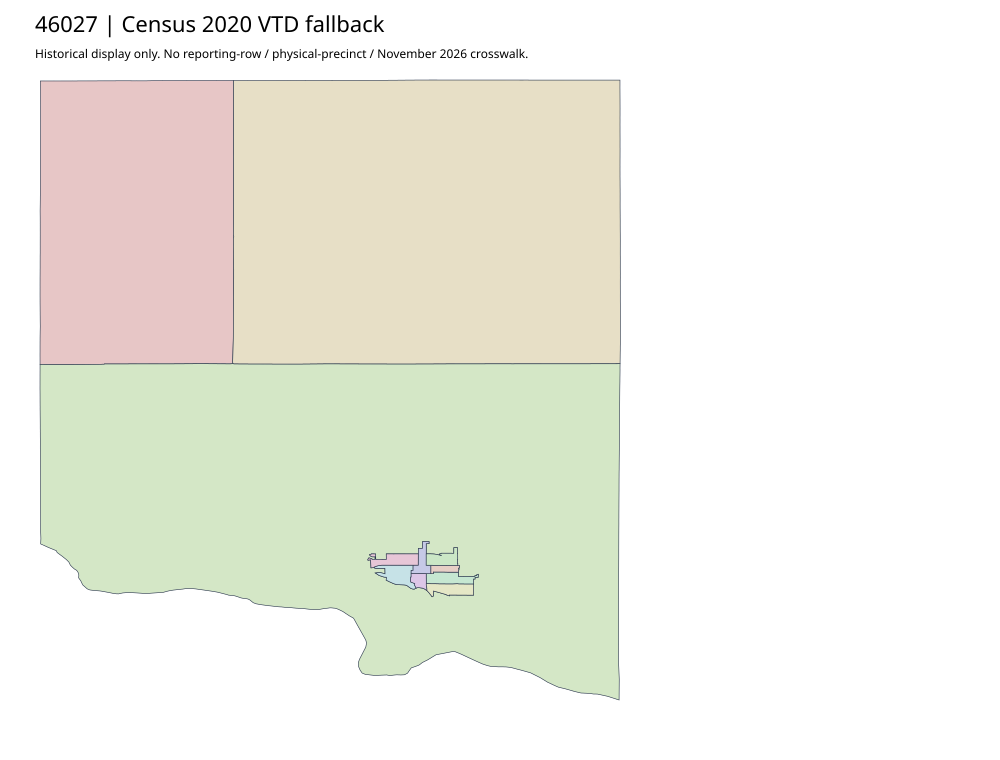

304 ordered indexClay | 46027
Official elections parent exposes acquired complete Rural Ward Map PDF. Separate acquired election-information documents are not additional map geometry. Rural ward coverage is narrower/different from a full native reporting partition; city/absentee finer allocation and vintage remain qualified.
4 priority / 11 full historical observations. Parent is a summary ancestor, not additive to leaves. No physical feature matches or current reporting crosswalk approved.
Acquired shared-parent assets
map-46027-008-network | complete1-page PDF; all-page contact sheet; complete page1; complete original gzip. Exact reconstruction: python -B scripts/reconstruct.py --id map-46027-008-network /private/tmp/map.pdf
Census2020 fallback
11 native historical VTD features. Entire785-feature ZIP original retained once, all66 counties. Yankton has one countywide VTD. No current/reporting allocation. complete original gzip

Full binary/attribute/geometry QA
Observed authority/acquisition routes
Complete SOS authority fields including original blank/masked values: parent inventory. No contacts were sent.
Ordered full children
- Precinct-03 | 1082 source votes | priority
- Precinct-S1 | 852 source votes | priority
- Precinct-W1 | 690 source votes | priority
- Precinct-S2 | 608 source votes | priority
- Precinct-W2 | 436 source votes | remainder
- Precinct-01 | 434 source votes | remainder
- Precinct-E1 | 408 source votes | remainder
- Precinct-02 | 384 source votes | remainder
- Precinct-C1 | 368 source votes | remainder
- Precinct-C2 | 206 source votes | remainder
- Precinct-E2 | 188 source votes | remainder